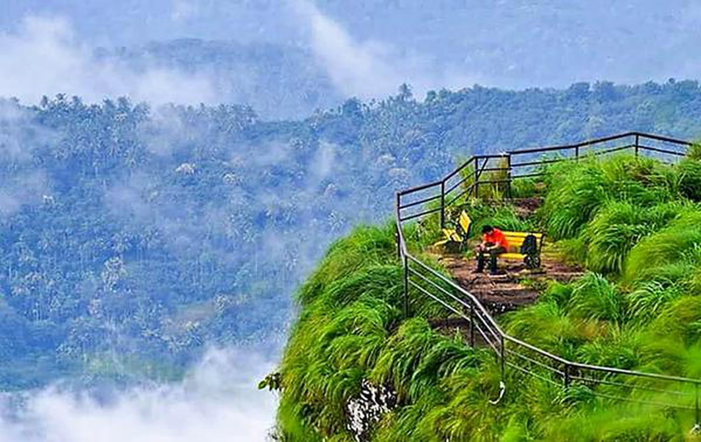
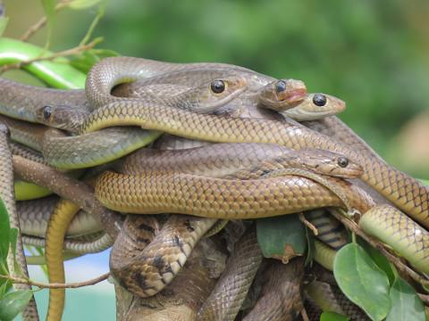

Kannur
Kannur, formerly known in English as Cannanore, is a city and a municipal corporation in the state of Kerala, India. It is the administrative headquarters of the Kannur district and situated 274 kilometres (170 mi) north of the major port city and commercial hub Kochi and 137 kilometres (85 mi) south of the major port city and a commercial hub, Mangalore. During the period of British colonial rule in India, when Kannur was a part of the Malabar District (Madras Presidency), the city was known as Cannanore. Kannur is the sixth largest urban agglomeration in Kerala. As of 2011 census, Kannur Municipal Corporation, the local body which administers mainland area of city, had a population of 232,486.
Tourist Spots
St. Angelo Fort (Kannur Fort)

St. Angelo Fort (also known as Kannur Fort or Kannur Kotta) is a fort facing the Arabian Sea, situated 3 km from Canannore (Kannur), a city in Kerala state, south India.
Parassinikkadavu Snake Park
The Parassinkkadavu Snake Park is located in Anthoor Municipality about 16 kilometres (9.9 mi) from Kannur Corporation in the Kannur district of north Kerala, in south India. The Snake Park is in Parassinikkadavu, which is 2 kilometres (1.2 mi) from National Highway (NH) 17, en route from Kannur to Taliparamba.